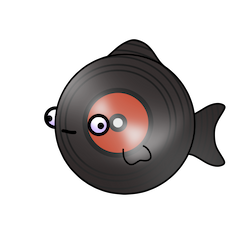
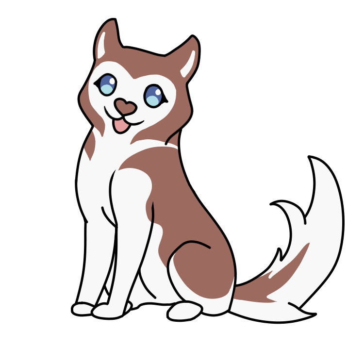
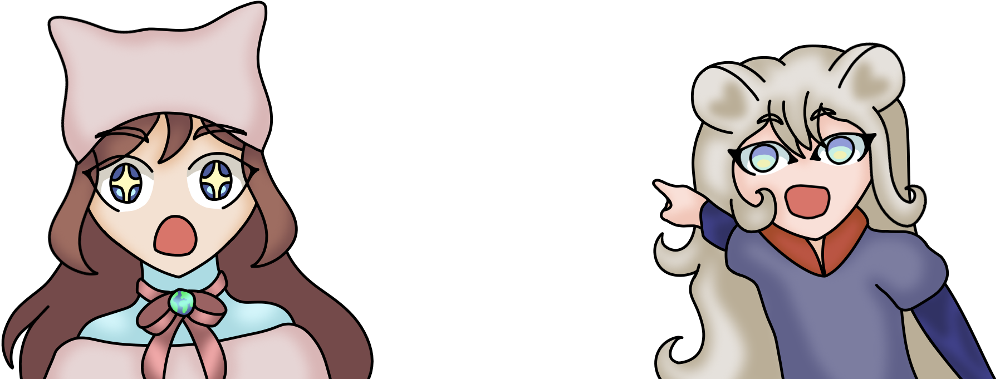

Technische interacties
Kleine simpele experimenten die het (voornamelijk) doen. En bronnen!
Kleine simpele experimenten die het (voornamelijk) doen. En bronnen!
...
...
Voorbeeld

>Wachten op input... 0:00 : 0:00Verouderd marquee element, maar zeer entertaining.
hex #xxxxxx
rgb(x, x, x)
Krijg een random getal tussen 1 en 20.
In het Copper/Ahtna chapter in Alaska laat deltakarakter Tagha aan Rosie de Iditarod Trail Hondenslede Race zien.
- Druk op de hond om de interactie te beginnen!
- Maak een grote aaibeweging over de hond met de muis :D

Interactieve iframe: Virtual Insanity door Jamiroquai.Direct naar songtekst pagina
Kleuren die je tegenkomt op de site.
--light-hoofdkleur: rgb(85, 131, 210);
--light-outlinekleur: rgba(57, 79, 152, 0.9);
--light-accentkleur: rgba(19, 94, 31, 0.9);
--light-borderkleur: rgba(174, 236, 229, 0.8);
--light-tekstkleur: rgb(233, 239, 239);
--dark-hoofdkleur: rgb(132, 75, 85);
--dark-rood-outlinekleur: rgba(94, 19, 43, 0.9);
--dark-groen-schaduwkleur: rgba(28, 60, 36, 0.9);
--dark-knop-shine: rgb(76, 137, 75);
--dark-borderkleur: rgba(236, 165, 165, 0.8);
--dark-tekstkleur: rgb(237, 223, 223);
De gradienten die je tegenkomt op de site.
Knoppen: linear-gradient(to bottom left, var(--light-hoofdkleur), rgb(90, 110, 176), rgba(141, 158, 214, 0.8), var(--light-outlinekleur), var(--light-hoofdkleur))
Navigatie HIER: linear-gradient(170deg in oklch, var(--light-outlinekleur) 10%, var(--light-accentkleur) 90%)
Headers, textboxes: linear-gradient(170deg in oklch, var(--light-outlinekleur) 10%, var(--light-accentkleur), var(--dark-groen-schaduwkleur) 90%)
Text container: repeating-linear-gradient(45deg in oklch, rgba(106, 210, 85, 0.6) 10px, rgba(230, 255, 86, 0.5) 100px, rgba(47, 207, 165, 0.6) 250px, rgba(106, 210, 85, 0.6) 400px)
Knoppen: linear-gradient(to bottom left, var(--dark-groen-schaduwkleur), var(--dark-knop-shine), var(--dark-groen-schaduwkleur))
Navigatie HIER: linear-gradient(in oklch, rosybrown, var(--dark-hoofdkleur))
Headers, textboxes: linear-gradient(170deg in oklch, var(--dark-hoofdkleur), var(--dark-rood-outlinekleur))
Text container: linear-gradient(to bottom right, rgb(159, 109, 97), rgba(245, 200, 200, 0.7), rgb(159, 109, 97))
S0 - HTML & CSS Basics
~ De site bestaat uit nette, duidelijke html en css.

S0 - Praktische CSS
~ Veel gestijld met css, komen ook verschillende selectoren bij kijken.

S0 - CSS: fonts met kleur en effecten
~ Fonts gevonden via DaFont en Google Fonts, toegevoegd met @fontface.

S0 - Typografie
~ Speels lettertype met persoonlijkheid voor knoppen en headers, en simpel leesbaar lettertype voor leesmateriaal.

S0 - Schetsen van o.a. interactie en animatie
~ Gemaakt wanneer nodig.

S0 - Interactie: MMD, micro-interacties, forms
~ Interactieve elementen zoals knoppen hebben hover, focus en active states.

S1 - Light & Dark theme
~ Custom properties gebruikt, bv voor de kleuren. Schakelen tussen dark en light mode met light-dark().

S1 - Mooie kleuren en gradients
~ Veel kleuren gebruikt met gradienten, vooral linear-gradient(), maar ook gebruik gemaakt van conic-gradient() en repeating-linear-gradient(). Geexperimenteerd met @property. Voldoende contrast tussen de kleuren.

S1 - Grid 101 + Media queries
~ Grid kolommen en flexbox gebruikt. @media gebruikt voor het responsive maken van de site op kleinere formaten zoals > 30em. Bijvoorbeeld op de homepage op een groot scherm, staat de afbeelding van de mascotte bovenaan op de zijkant, maar op mobiel formaat staat ze onderin binnen het vak.

S1 - Responsive grid + Grid-areas
~ Display grid gebruikt samen met grid-template-columns: repeat(auto-fit, minmax(40em, 1fr)) voor responsive kolommen.

S2 - Buttons, states en selectors
~ Alle knoppen hebben hover, focus en active states.

S2 - Buttons + Dialogs
~ Buttons die allerlei dingen doen zoals light/dark wisselen. Cookie melding is een dialog.

S2 - Position + Dialogs
~ Per position een voorbeeld: fixed voor de navigatie, sticky voor de popup in de inspiratiegarden, absolute voor de decoratieve afbeelding op het hoofdmenu, relative voor de containers van de afbeeldingrijtjes op de over pagina, static voor alles waar geen specifiek type position voor nodig is.

S2 - Meer interactie met HTML en CSS
~ Target="blank" toegevoegd aan de link naar de pagina in het iframe op de interacties pagina zodat het opent in een nieuw tabblad, en je makkelijker terug kan naar de hoofdsite. Gestijld met selector a[target="_blank"].

S3 - Interessantere layouts
~ Vw voor bijna alle grootte-gerelateerde situaties gebruikt. Clamp() gebruikt voor responsive lettergroottes.

S3 - Variabele fonts
~ Functioneel variabele font "MovementV" gevonden en hover transities met font-variation-settings uitgeprobeerd.

S3 - CSS animaties
~ Animaties gemaakt met @keyframes, en transition bv naar :hover en :active.

S3 - Maak je website af
~ Validatie en toegankelijkheid doorstaan.

Verzameld aan het begin van dit blok. Alle sites gelinkt.
Druk op de iframe hieronder en gebruik de links en rechts pijltjes voor het navigeren door de Remark presentatie.Direct naar presentatie pagina
- Vorige opleiding voorkennis (html, css, javascript, python)
- MDN (wat doet een element of property precies op zichzelf)
https://developer.mozilla.org/en-US/docs/Web/HTTP/Reference/Status/418
- Stack Overflow (specifieke antwoorden bij specifieke vragen)
https://stackoverflow.com/questions/26449590/make-css-pseudoelement-before-same-height-as-main-element
- De deep dives (specifieke handige inspiratie)
https://codepen.io/editor/vasilisvg/pen/01a10b68-abd8-77ce-a22a-64502d29c880
- Uitproberen en combineren en kijken wat er gebeurt.
https://christina.keultjes.net/digital-garden/index.html
- Pixabay (Royalty-vrije afbeeldingen. Bijvoorbeeld hierachter de ruimte-achtergrond en de gif er bovenop)
https://pixabay.com/illustrations/stars-sky-space-space-wallpaper-2643089/
- Opentracks [voormalig DOVA-SYNDROME] (Royalty-vrije muziek gemaakt door echte mensen. Voor de muziekspeler op deze pagina)
https://opentracks.com/en/bgm/detail/23852
- Mezelf (Eigen tekeningen, eigen code, eigen passie)
